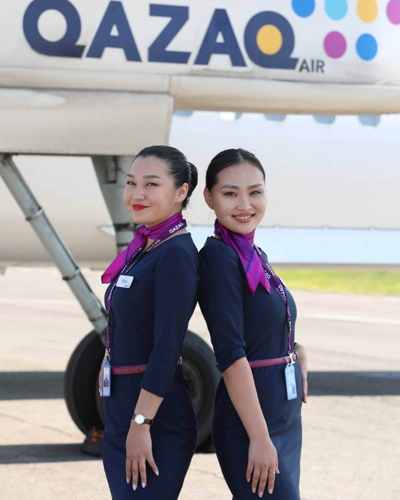
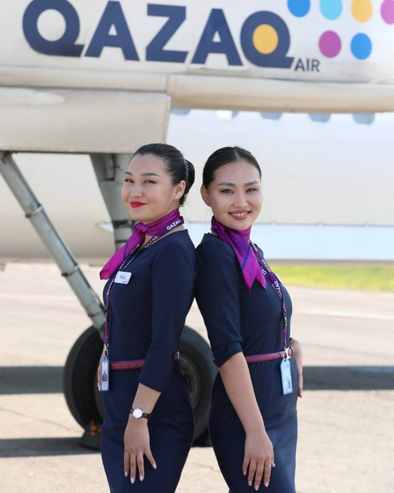

📅 Founded: August 29, 2001
👤 Founders: Government of Kazakhstan (51%), BAE Systems (49%)
🢠Headquarters: Almaty, Kazakhstan
🛫 Main Hubs: Almaty, Astana
🌠Coverage: 21 countries, 94 destinations
Air Astana is the national airline of Kazakhstan, known for its high level of service and safety. The company was established on the initiative of the First President of Kazakhstan, Nursultan Nazarbayev, and operated its first flight on May 15, 2002. The airline follows international standards and consistently holds a 4-star rating from Skytrax.
Air Astana operates flights to 94 destinations, including long-haul international routes.
🌠Top 5 International Destinations:
🇬🇧 London, United Kingdom (LHR)
🇹🇷 Istanbul, Turkey (IST)
🇰🇷 Seoul, South Korea (ICN)
🇩🇪 Frankfurt, Germany (FRA)
🇦🇪 Dubai, UAE (DXB)
🡠Top 5 Domestic Routes:
Almaty – Astana
Astana – Shymkent
Almaty – Atyrau
Astana – Aktau
Almaty – Turkistan
Air Astana operates a fleet of 40 modern aircraft:
✈ Airbus A320neo, A321neo, A321LR – 24 aircraft
✈ Boeing 767-300ER – 3 aircraft
✈ Embraer E190-E2 – 13 aircraft
Average fleet age – 5 years, making it one of the youngest fleets in the world.
🆠Best Airline in Central Asia (Skytrax, 2012–2024)
🆠4-Star Rating for Safety and Service
🏆 Member of the International Air Transport Association (IATA)
📌 Via official website: airastana.com
📌 Through mobile apps:
📱 iOS
📱 Android
✈ Air Astana — your comfort in the sky! 🛫✨


📅 Founded: 1997
👤 Founders: Private airline
🢠Headquarters: Shymkent, Kazakhstan
🛫 Main Hubs: Shymkent, Astana, Almaty
🌠Coverage: 15 countries, 38 destinations
SCAT Airlines is one of the largest private carriers in Kazakhstan. The airline operates both domestic and international scheduled flights as well as charter services. SCAT continuously modernizes its fleet and expands its route network while maintaining internationally recognized safety certifications such as IOSA.
SCAT operates flights to 38 destinations within Kazakhstan and abroad.
🌠Top 5 International Destinations:
🇹🇷 Antalya, Turkey (AYT)
🇦🇪 Sharjah, UAE (SHJ)
🇷🇺 Moscow, Russia (VKO)
🇬🇪 Batumi, Georgia (BUS)
🇰🇬 Osh, Kyrgyzstan (OSS)
🡠Top 5 Domestic Routes:
Astana – Almaty
Shymkent – Astana
Almaty – Oral (Uralsk)
Astana – Aktau
Shymkent – Atyrau
SCAT operates a fleet of 30 aircraft of various types:
✈ Boeing 737-300/700/800/900 – 20 aircraft
✈ Boeing 757-200 – 2 aircraft
✈ Boeing 767-300ER – 2 aircraft
✈ Bombardier CRJ-200 – 6 aircraft
Average fleet age – 7 years.
🆠IOSA international safety certification
🆠Dynamic development of route network
🏆 Leader in charter flights in Kazakhstan
📌 Via official website: scat.kz
📌 Through mobile apps:
📱 iOS
📱 Android
✈ SCAT — Comfortable flights at affordable prices! 🛫


📅 Founded: 2015
👤 Owner: Samruk-Kazyna National Welfare Fund
🢠Headquarters: Astana, Kazakhstan
🛫 Main Hub: Astana
🌠Coverage: 17 domestic routes
Qazaq Air was established to develop regional air connectivity within Kazakhstan. The airline uses modern turboprop aircraft, making it possible to operate flights to smaller cities and regions efficiently.
🡠Top 5 Domestic Routes:
Astana – Petropavl
Astana – Oskemen (Ust-Kamenogorsk)
Astana – Kostanay
Astana – Semey
Almaty – Taldykorgan
✈ De Havilland Canada Dash 8-Q400 – 5 aircraft (78 seats each)
🆠Best regional airline in Central Asia (Skytrax, 2012–2024)
🆠4-star rating for safety and service
🏆 Member of the International Air Transport Association (IATA)
📌 Via official website: flyqazaq.com
✈ Qazaq Air – Affordable regional flights across Kazakhstan! 🛫
 

📅 Founded: 2002
👤 Owner: Samruk-Kazyna National Welfare Fund
🢠Headquarters: Astana, Kazakhstan
🚆 Total railway length: Over 16,000 km
🌠Coverage: Across Kazakhstan and international routes
JSC "National Company Kazakhstan Temir Zholy" is the primary operator of railway transportation in Kazakhstan. The company provides both passenger and freight transportation services, connecting all major cities and regions of the country. KTZ also plays a vital role as a logistics hub on international transit corridors between Europe, Asia, and Russia.
KTZ offers daily domestic and international passenger train services throughout the country and beyond.
🌠Top 5 International Routes:
🇷🇺 Astana – Moscow
🇨🇳 Almaty – Urumqi
🇺🇿 Astana – Tashkent
🇷🇺 Almaty – Novosibirsk
🇰🇬 Almaty – Bishkek
🡠Top 5 Domestic Routes:
Astana – Almaty (Talgo)
Astana – Shymkent
Almaty – Atyrau
Astana – Aktau
Kostanay – Pavlodar
There are over 100 railway stations in Kazakhstan. The largest include:
🢠Top 5 Major Stations:
🚆 Nurly Zhol (Astana) — the largest station, opened in 2017
🚆 Almaty-1 and Almaty-2 — main terminals in the southern capital
🚆 Shymkent — hub of the southern region
🚆 Atyrau — key center of the western region
🚆 Karaganda — main station in central Kazakhstan
🚄 Talgo ("Tourist" and "Business") — modern high-comfort express trains
🚆 Regular Trains — with compartment and sleeper (platzkart) cars
🚊 Electric Trains — for short regional routes
📌 Via official website: bilet.railways.kz
📱 Mobile apps:
iOS
Android
🚆 Railway transport – a reliable and comfortable way to travel! ✨
.png) Public Transport
Public Transport
Public transportation in Kazakhstan includes buses, trolleybuses, trams, metro, and intercity routes. These services offer convenient travel both within cities and between regions.
🚠Where do they operate? Available in all large and medium-sized cities as well as between settlements.
💳 Payment options: Cash, bank cards, or mobile apps.
📌 Cities with the most developed bus systems:
In major cities, contactless payment systems are available: ONAI (Almaty, Astana), Tulpar Card (Shymkent), AktobeBus (Aktobe), and others.
⚡ Trolleybuses operate only in Almaty and are considered eco-friendly transport.
🚊 Trams are available only in Pavlodar — the only city in Kazakhstan with a tram network.
📅 Opened: 2011
🚉 Number of stations: 11
📠Length: 13.4 km
💳 Payment: ONAI card, bank cards, QR codes
Almaty Metro is the only subway system in Kazakhstan. It connects the city center with southern districts and continues to expand.
✅ Apps for routes and payments:
Taxis in Kazakhstan are a fast and convenient way to move around cities. With the advancement of mobile technologies, taxi apps are widely used across the country. You can order a ride in just a few minutes, choose your preferred vehicle type, and pay via the app.
One of the most popular services. Offers standard and comfort classes, advance booking, and fare estimates.
📱 iOS
📱 Android
An international service available in Almaty, Astana, and Shymkent. Offers various vehicle types and a user-friendly interface.
📱 iOS
📱 Android
Known for its low fares and various ride options like Economy, Comfort, and XL. Operates in Almaty and Astana.
📱 iOS
📱 Android
The passenger sets the price — the driver chooses to accept or not. Offers full control over the ride cost.
📱 iOS
📱 Android
Vehicle Selection: Most apps offer options from Economy to Comfort class vehicles.
Payment: Payments can be made via app with a bank card, in cash, or through e-wallets.
Safety: All apps provide route tracking and driver rating. Insurance is available for both passengers and drivers.
Extra Options: Some services offer airport transfers, package delivery, and even pet-friendly rides.